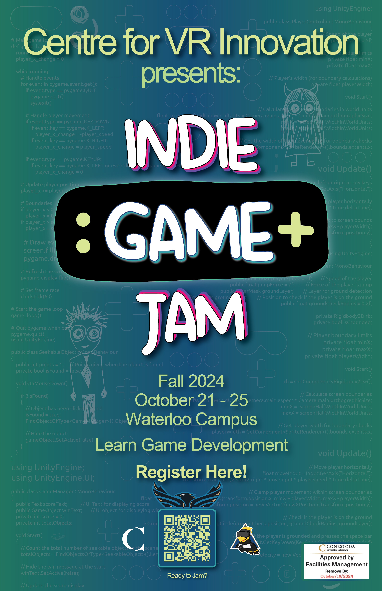
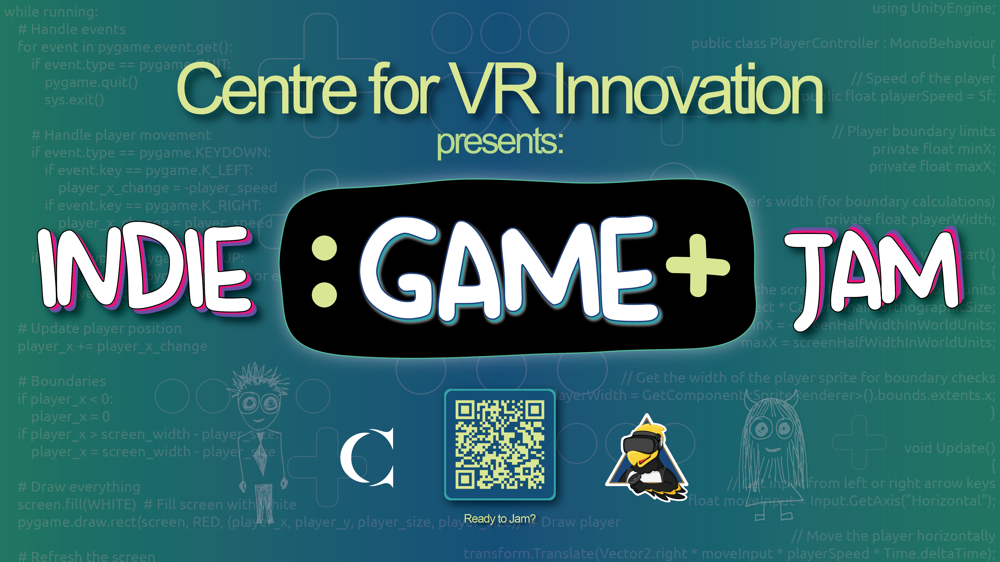
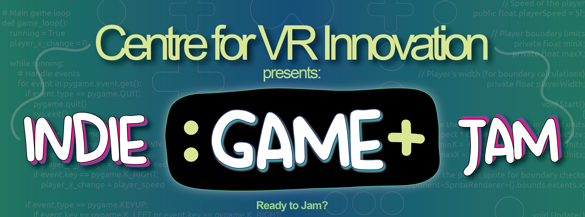

Indie Game Jam
Promotional materials for Conestoga College's bi-termly indie game jam event.
The Indie Game Jam is a recurring event hosted at Conestoga College's Waterloo campus, bringing students together to design and develop games over a five day period. I designed promotional materials for two separate jams, working within quick turnarounds and specific dimension requirements for print and digital displays.
Event Posters


Digital Displays
Alongside the print posters, I created graphics for Conestoga's digital television network and promotional mastheads.

